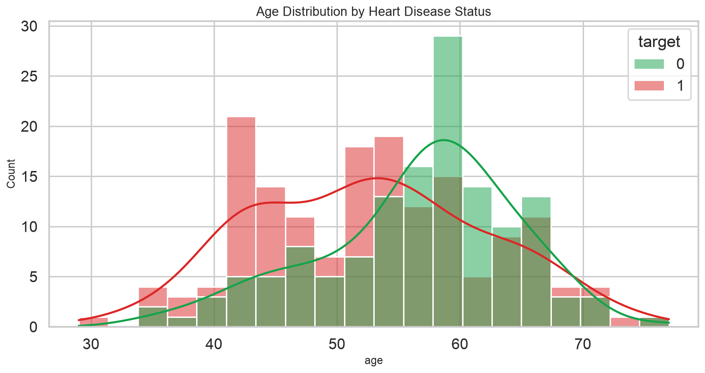
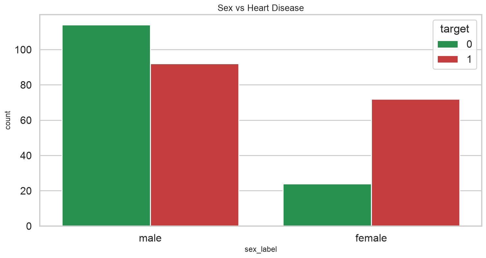
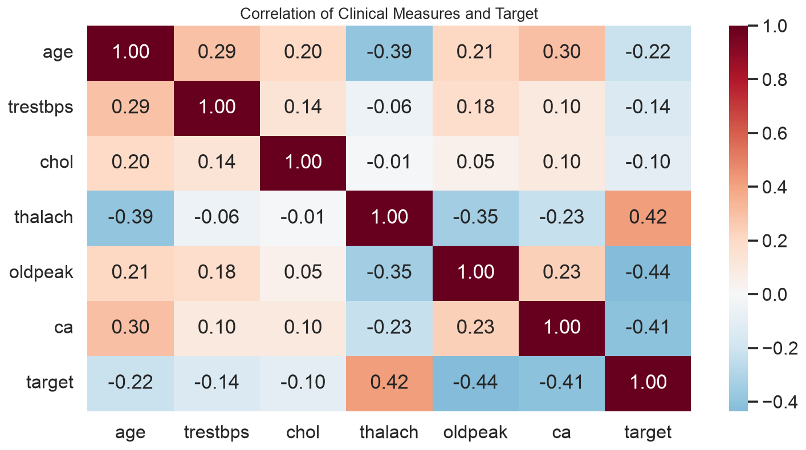
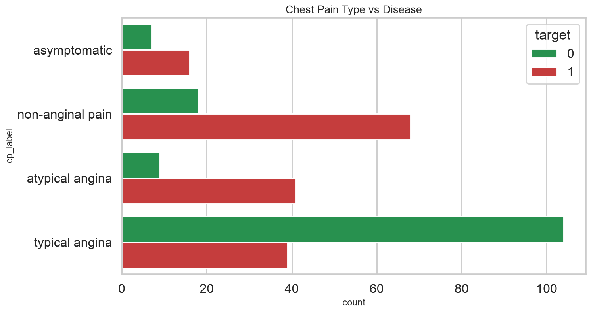
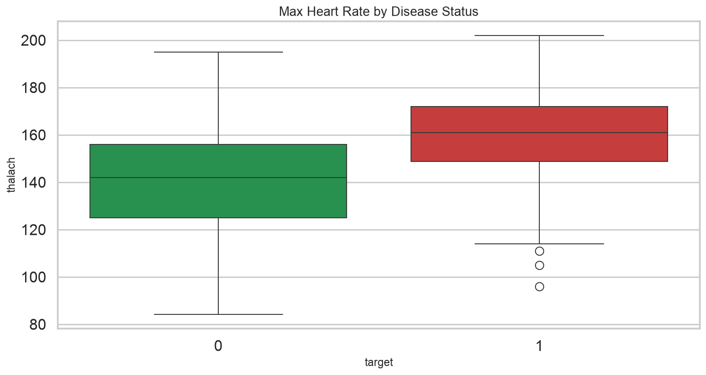
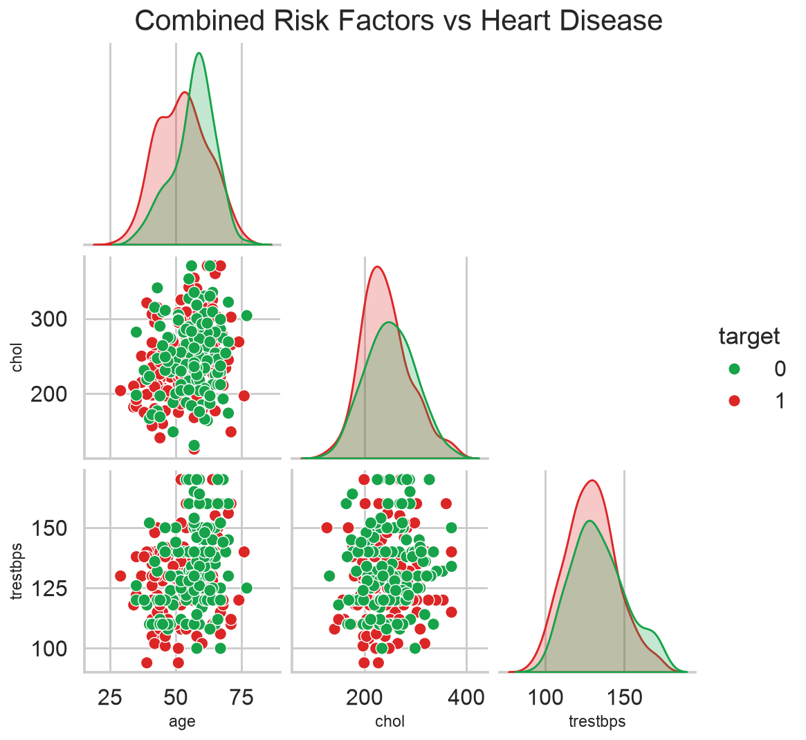

1
Overview
HealthPulse Analytics profiles cardiology patients to find demographic and clinical factors linked to heart-disease diagnosis and to support earlier prevention.
- Internal: Management, Healthcare providers, Data analysts
- External: Patients, Cardiology research institute, Policymakers
2
Problem Statement
The institute needs a high-risk patient profile from age, sex, chest pain, blood pressure, cholesterol, ECG, exercise tests, fluoroscopy vessel counts, and thalassemia — then clear prevention actions for clinicians and patients.
3
Proposed Methodology
- Validate types, map target to binary disease, drop duplicates, and winsorize extreme labs.
- Describe demographics and clinical distributions.
- Correlate features with diagnosis; compare groups with t-tests and crosstabs.
- Fit a standardized logistic regression with a stratified hold-out set (AUC, F1).
- State ethical limits: this is decision support, not an autonomous diagnosis.
4
Data Overview
- rows_raw: 303
- rows_clean: 302
- disease_prevalence: 0.543
- mean_age: 54.42
- features: ['age', 'sex', 'cp', 'trestbps', 'chol', 'fbs', 'restecg', 'thalach', 'exang', 'oldpeak', 'slope', 'ca', 'thal']
- age: Patient age
- sex: 1 = male, 0 = female
- cp: Chest pain type (0-3)
- trestbps: Resting blood pressure (mm Hg)
- chol: Serum cholesterol (mg/dl)
- fbs: Fasting blood sugar > 120 mg/dl
- restecg: Resting ECG result (0-2)
- thalach: Maximum heart rate achieved
- exang: Exercise-induced angina
- oldpeak: ST depression vs rest
- slope: Peak exercise ST slope
- ca: Major vessels colored by fluoroscopy
- thal: Thalassemia code
- target: Heart-disease diagnosis (1 = yes)






5
Key Findings
- After cleaning, disease prevalence is 54.3% of unique patient rows.
- Mean age is 54.4 years; the cohort is mixed but typically middle-to-older adult.
- The strongest numeric association with diagnosis in this extract is exang (r=-0.44).
- Exercise angina share is 32.8%; max heart rate averages differ by angina status.
- A simple logistic model reaches AUC 0.86 on unseen rows — useful for ranking risk, not replacing ECG/clinical judgment.
6
Limitations
- UCI Cleveland-style data is small, referred, and historically male-skewed.
- No follow-up time, so survival analysis is not supported despite the prompt's wording.
- Coding of cp/thal/ca can differ across mirrors of the dataset.
- Outlier clipping and duplicate removal change counts versus the raw Kaggle file (often duplicated).
- Models can encode historical care bias; they must stay under clinician review and privacy controls.
7
Conclusion
Heart-disease labels in this table cluster with chest-pain type, ST depression, exercise angina, vessel counts, and max heart rate. Prevention should target those markers plus blood pressure and cholesterol, with sex-aware screening rather than a single threshold.
8
Recommendations
- Flag patients with typical high-risk combinations (chest pain + exang + elevated oldpeak/ca) for faster cardiology review.
- Pair lipid and blood-pressure programs with the age groups that dominate the cohort.
- Do not treat fasting blood sugar alone as a sufficient screen; combine it with exercise ECG markers.
- Keep any predictive score as a triage aid; document consent, purpose limitation, and audit of errors.
- Collaborate with clinicians to recode features and refresh the model as new labeled visits arrive.
Appendix
Solution guide (assignment questions)
Basic questions
- Average age54.42
- Gender distribution{'male': 206, 'female': 96}
- Average resting blood pressure131.26
- Patients with fasting blood sugar >12045
- Chest pain type codes present[0, 1, 2, 3]
- Maximum heart rate recorded202.0
- Exercise-induced angina %32.78
- Average cholesterol245.38
- Patients with restecg = 24
- ca distribution{'0': 175, '1': 65, '2': 38, '3': 20, '4': 4}
Medium questions
- Correlation age vs cholesterol0.1989
- Chest pain type mix by age group{0: {'21-40': 0.333, '41-50': 0.382, '51-60': 0.504, '61-80': 0.544}, 1: {'21-40': 0.167, '41-50': 0.263, '51-60': 0.155, '61-80': 0.089}, 2: {'21-40': 0.333, '41-50': 0.329, '51-60': 0.264, '61-80': 0.266}, 3: {'21-40': 0.167, '41-50': 0.026, '51-60': 0.078, '61-80': 0.101}}
- Mean max HR by exercise angina{0: 155.66, 1: 137.21}
- Resting BP male vs female (Welch t-test){'male_mean': 130.71, 'female_mean': 132.44, 'p_value': 0.4166}
- Heart-disease rate by fasting blood sugar{0: {0: 0.451, 1: 0.489}, 1: {0: 0.549, 1: 0.511}}
- Heart-disease rate by vessel count (ca){0: {0: 0.257, 1: 0.677, 2: 0.816, 3: 0.85, 4: 0.25}, 1: {0: 0.743, 1: 0.323, 2: 0.184, 3: 0.15, 4: 0.75}}
- Average oldpeak by chest pain type{0: 1.352, 1: 0.316, 2: 0.807, 3: 1.383}
- Thalassemia vs target{0: {0: 0.5, 1: 0.667, 2: 0.218, 3: 0.761}, 1: {0: 0.5, 1: 0.333, 2: 0.782, 3: 0.239}}
- Common risk combinations among disease=1[{'cp': 2, 'fbs': 0, 'exang': 0, 'thal': 2, 'counts': 41}, {'cp': 1, 'fbs': 0, 'exang': 0, 'thal': 2, 'counts': 30}, {'cp': 0, 'fbs': 0, 'exang': 0, 'thal': 2, 'counts': 23}, {'cp': 2, 'fbs': 1, 'exang': 0, 'thal': 2, 'counts': 10}, {'cp': 0, 'fbs': 0, 'exang': 1, 'thal': 2, 'counts': 6}, {'cp': 2, 'fbs': 0, 'exang': 0, 'thal': 3, 'counts': 6}, {'cp': 3, 'fbs': 0, 'exang': 0, 'thal': 2, 'counts': 5}, {'cp': 1, 'fbs': 0, 'exang': 0, 'thal': 3, 'counts': 4}]
- Clinical means disease vs no disease{'disease': {'age': 52.59, 'chol': 241.03, 'trestbps': 129.13, 'thalach': 158.38, 'oldpeak': 0.59}, 'no_disease': {'age': 56.6, 'chol': 250.54, 'trestbps': 133.79, 'thalach': 139.2, 'oldpeak': 1.55}}
Advanced questions
- Strongest correlations with target{'exang': -0.436, 'oldpeak': -0.435, 'cp': 0.432, 'thalach': 0.42, 'ca': -0.409, 'slope': 0.344, 'thal': -0.343, 'sex': -0.284}
- Logistic regression hold-out AUC0.8648
- Logistic coefficients (standardized){'cp': 0.993, 'sex': -0.738, 'ca': -0.661, 'thal': -0.635, 'thalach': 0.616, 'oldpeak': -0.595, 'exang': -0.504, 'chol': -0.446, 'slope': 0.291, 'restecg': 0.212, 'trestbps': -0.184, 'age': 0.025, 'fbs': 0.008}
- Classification report (weighted avg f1)0.773
- Mean ST slope by chest pain type{0: 1.259, 1: 1.68, 2: 1.5, 3: 1.261}
- Thalassemia note on survivalDataset is cross-sectional (no follow-up time); survival curves are not identifiable. Age vs thal by target is reported as a proxy only.
Appendix
Additional resources
- https://www.kaggle.com/datasets/johnsmith88/heart-disease-dataset
- UCI Heart Disease data documentation
- docs/CASE_STUDY.md, docs/SOLUTION_GUIDE.md